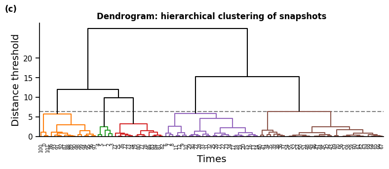
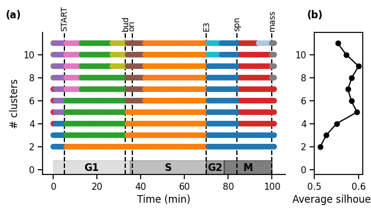

17. Inferring biological phases by clustering snapshots#
This notebook is based on the analysis performed in
“Inferring cell cycle phases from a partially temporal network of protein interactions”
by Lucas et al. in Cell Reports Methods (2023)
https://doi.org/10.1016/j.crmeth.2023.100397
Here, we infer biological phases of the cell cycle by clustering the snapshot of the temporal network.
First, we compute a fixed number of clusters. Then, we compute a range of numbers of clusters, to explore a range of timescales.
import string
from pathlib import Path
import matplotlib.pyplot as plt
import networkx as nx
import numpy as np
import pandas as pd
import seaborn as sb
import phasik as pk # pip install phasik (requires pandas < 2.0)
# https://gitlab.com/habermann_lab/phasik
sb.set_context("notebook")
17.1. 1. Build temporal network#
# load static PPI network
static_net_filepath = "phasik_data/static_PPI_network_KEGG.adjlist"
static_network = nx.read_adjlist(static_net_filepath) # networkx Graph object
pk.graph_size_info(static_network)
# load edge time series
edge_activity_filepath = f"phasik_data/edge_time_series_normed.csv"
# edge_activity_filepath = "data/chen/edge_time_series.csv"
norm = True
# use this for non-normalised time series
# edge_activity_filepath = "data/chen/edge_time_series.csv"
# norm = False
edge_series = pd.read_csv(edge_activity_filepath).transpose()
times = list(edge_series.columns)
# build temporal network
# this function buils a TemporalNetwork, by integrating the edge time series to the static network,
# and setting a constant default weight value for edges for which we have no temporal information
temporal_network = pk.TemporalNetwork.from_static_network_and_edge_timeseries(
static_network,
edge_series,
static_edge_default_weight=1,
quiet=True, # if True, prints less information
)
WARNING: 125/159 edges in the static network have no temporal information.
A PartiallyTemporalNetwork is created instead.
/Users/maxime/.pyenv/versions/python_39/lib/python3.9/site-packages/phasik/classes/TemporalNetwork.py:171: FutureWarning: The frame.append method is deprecated and will be removed from pandas in a future version. Use pandas.concat instead.
self._tedges = self._tedges.append(tedges_to_add)
print(f"Temporal network shape (N, T): {temporal_network.shape()}")
print(pk.graph_size_info(static_network))
print(f"Number of temporal edges: {temporal_network.number_of_temporal_edges()}")
Temporal network shape (N, T): (83, 102)
83 nodes and 159 edges
Number of temporal edges: 34
17.2. 2. Infer biological phases with hierarchical clustering#
# clustering parameters
distance_metric = "euclidean" # used to compute distance between snapshots
clustering_method = "ward" # used to compute the distance between clusters
n_max_type = "maxclust" # set number of clusters by maximum number of clusters wanted
n_max = 5 # max number of clusters
n_max_range = range(2, 12) # range of numbers of clusters to compute
# plotting parameters
events_times = [5, 33, 36, 70, 84, 100]
events_labels = ["START", "bud", "ori", "E3", "spn", "mass"]
events = [(time, name, "dashed") for time, name in zip(events_times, events_labels)]
phases = [(0, 35, "G1"), (35, 70, "S"), (70, 78, "G2"), (78, 100, "M")]
time_ticks = range(101, 10)
# variables_to_plot = []
17.2.1. 2.1 Single number of clusters#
distance_matrix = pk.DistanceMatrix.from_temporal_network(
temporal_network, distance_metric
)
cluster_set = pk.ClusterSet.from_distance_matrix(
distance_matrix, n_max_type, n_max, clustering_method
)
# plot clusters
gs_kw = dict(width_ratios=[1], height_ratios=[6, 1])
fig, (ax1, ax2) = plt.subplots(2, 1, gridspec_kw=gs_kw, sharex=True, figsize=(5, 7))
# distance matrix
im = ax1.imshow(
distance_matrix.distance_matrix,
aspect="equal",
origin="lower",
cmap="YlGnBu_r",
)
sb.despine(ax=ax1, top=False, bottom=True)
ax1.set_ylim(0, 101)
ax1.set_ylabel("Time (min)")
ax1.set_xlabel("Time (min)")
ax1.xaxis.set_label_position("top")
ax1.xaxis.set_ticks_position("top")
# clusters
cluster_set.plot(ax=ax2, colors=[4, 5, 3, 2, 1], y_height=0)
# cluster_set.plot(ax=ax2, colours=None)
sb.despine(ax=ax2, left=True, bottom=True, top=False)
# only way to get rid of spine offset in scatter plot apparently
ax2.set_xlim(0, 101)
ax2.set_yticks([])
ax2.set_xlabel("Time (min)")
ax2.set_xticklabels(range(0, 101, 20))
ax2.xaxis.set_label_position("top")
pk.plot_phases(phases, ax=ax2, y_pos=0.8, ymax=0.9, ymin=0.75)
pk.plot_events(events, ax=ax2, text_y_pos=-0.06, text_x_offset=1.5)
# colorbar
cax = fig.add_axes((0, 0, 1, 0.1))
pos1 = ax1.get_position() # get the original position
pos2 = [
pos1.x0 + pos1.width + 0.03,
pos1.y0,
pos1.width * 0.02,
pos1.height,
] # vertical
cax.set_position(pos2) # set a new position
cb = fig.colorbar(im, cax=cax)
cb.set_ticks([0, 2, 4])
cb.set_label("Distance")
sb.despine(ax=cax)
# label subplots
for n, ax in enumerate([ax1, ax2]):
ax.text(
-0.1,
1.1,
f"({string.ascii_lowercase[n]})",
transform=ax.transAxes,
size="medium",
weight="bold",
)
plt.show()
/var/folders/wm/5gv37br900l73y63tjf8sr1r0000gn/T/ipykernel_46378/2812442001.py:31: UserWarning: FixedFormatter should only be used together with FixedLocator
ax2.set_xticklabels(range(0, 101, 20))
fig, ax = plt.subplots(1, 1, figsize=(9, 3))
if clustering_method != "k_means":
cluster_set.plot_dendrogram(ax=ax, leaf_font_size="xx-small")
ax.set_ylabel("Distance threshold", fontsize="large")
ax.set_xlabel("Times", fontsize="large")
ax.set_yticks(range(0, 21, 5))
ax.set_title("Dendrogram: hierarchical clustering of snapshots", weight="bold")
sb.despine()
# label subplots
ax.text(-0.1, 1.1, f"(c)", transform=ax.transAxes, size="medium", weight="bold")
plt.show()

17.2.2. 2.2 Range of number of clusters: exploring timescales#
cluster_sets = pk.ClusterSets.from_distance_matrix(
distance_matrix, n_max_type, n_max_range, clustering_method
)
# Plot
gridspec_kw = {"width_ratios": [5, 1]}
fig, (ax1, ax2) = plt.subplots(
1, 2, figsize=(7, 3.5), gridspec_kw=gridspec_kw, sharey="all"
)
cluster_sets.plot(axs=(ax1, ax2), with_silhouettes=True)
pk.adjust_margin(ax=ax1, bottom=0.2 if phases else 0.05, top=0.05)
pk.plot_events(events, ax=ax1)
pk.plot_phases(phases, ax=ax1, y_pos=0.05, ymax=0.1)
# Format
ax1.set_xlabel("Time (min)")
ax1.set_axisbelow(True)
ax1.set_ylabel("# clusters")
if time_ticks:
ax1.set_xticks(time_ticks)
sb.despine(ax=ax1)
ax2.set_xlabel("Average silhouette")
ax2.set_xlim((-0.1, 1.1))
ax2.set_xlim((0.5, 0.61))
ax2.yaxis.set_tick_params(labelleft=True)
plt.subplots_adjust(wspace=0.2, top=0.8)
# label subplots
for n, ax in enumerate([ax1, ax2]):
ax.text(
-0.15,
1.1,
f"({string.ascii_lowercase[n]})",
transform=ax.transAxes,
size="medium",
weight="bold",
)
plt.show()
